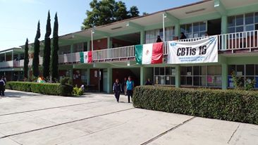
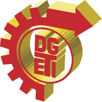
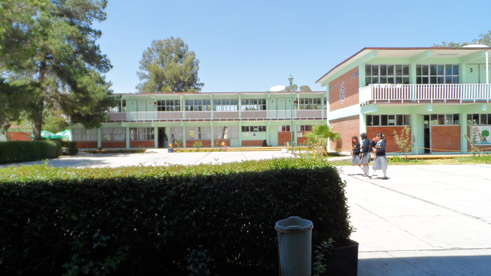

Centro De Bachilleratos Tecnologico Industrial y De Servicios No.16
Que Es DEGTI
La Direccion General de Educacion Tecnologica Industrial es una dependencia adscrita a la Subsecretaria de Educacion Media Superior (SEMS), dependiente de la Secretaria de Educacion Publica que ofrece el servicio educativo del nivel medio superior tecnologico.
El 16 de Abril de 1971 es publicado en el Diario Oficial de la Federacion el acuerdo presidencial por el que se modifica la estructura organica administrativa de la SEP y se da paso a la creacion de a DGETI, en agosto de ese mismo ano se publican las funciones que tendra esta institucion y se integran a ella los centros de capacitacion para el trabajo industrial, escuelas tecnologicas industriales, los centros de estudios tecnologicos en el Distrito Federal y los centros de estudios tecnologicos foraneos.
Actualmente la DGETI es la institucion de educacion media superior tecnologica mas grande del pais, con una infraestructura fisica de 433 planteles educativos a nivel nacional, de los cuales 168 son CETIS y 265 CBTIS; ha promovido ademas la creacion de al menos 288 CECyTEs, mismos que operan bajo un sistema descentralizado.
Tenemos como objetivo formar bachilleres tecnicos y tecnicos profesionales que desarrollen, fortalezcan y preserven una cultura tecnologica y una infraestructura industrial y de servicios que coadyuven a satisfacer las necesidades economicas y sociales del pais.
https://www.youtube.com/watch?v=lfk4Stc-8Vg

Plan De Estudios
Formar ciudadanos con las habilidades, conocimientos y actitudes requeridas para propiciar y participar en una sociedad del conocimiento, tanto en el ambito laboral como social. Lo anterior en un contexto de equidad, flexibilidad, integralidad y apertura, que coadyuve a satisfacer las necesidades sociales y economicas del pais.

Vision de la DGETI
Ser una institucion queproporcione una formacion integral y pertinente de acuerdo a las exigencias derivadas de la competitividad mundial y el entorno y vocacion local, ademas de tener la flexibilidad para satisfacer los intereses, aspiraciones y posibilidades de la poblacion que demanda este nivel educativo en nuestros diferentes planteles.

Aplicacion Seis
ULISES FLORES GRANDE
Especialidades
Aplicacion Seis
ULISES FLORES GRANDE
Ubicacion
Aplicacion Seis
ULISES FLORES GRANDE
Programacion
La programacion informatica, acortada como programacion, es el proceso de disenar, codificar, depurar y mantener el codigo fuente de programas computacionales. El codigo fuente es escrito en un lenguaje de programacion. El proposito de la programacion es crear programas que exhiban un comportamiento deseado. El proceso de escribir codigo requiere frecuentemente conocimientos en varias areas distintas, ademas del dominio del lenguaje a utilizar, algoritmos especializados y logica formal. Programar no involucra necesariamente otras tareas tales como el analisis y diseno de la aplicacion (pero si el diseno del codigo), aunque si suelen estar fusionadas en el desarrollo de pequenas aplicaciones.

Del proceso de programacion surge lo que comunmente se conoce como software (conjunto de programas), aunque estrictamente este ultimo abarca mucho mas que solo la programacion.
Aplicacion Seis
ULISES FLORES GRANDE
Electricidad
El fenomeno de la electricidad ha sido estudiado desde la antiguedad, pero su estudio cientifico sistematico comenzo en los siglos XVII y XVIII. A finales del siglo XIX los ingenieros lograron aprovecharla para uso domestico e industrial. La rapida expansion de la tecnologia electrica la convirtio en la columna vertebral de la sociedad industrial moderna.3
Michael Faraday relaciono el magnetismo con la electricidad.
Mucho tiempo antes de que existiera algun conocimiento sobre la electricidad, la humanidad era consciente de las descargas electricas producidas por peces electricos. En textos del Antiguo Egipto que datan del 2750 a. C. se referian a estos peces como los tronadores del Nilo, descritos como los protectores de los otros peces. Posteriormente, los peces electricos tambien fueron descritos por los romanos, griegos, arabes naturalistas y fisicos. Autores antiguos como Plinio el Viejo o Escribonio Largo, describieron el efecto de adormecimiento de las descargas electricas producidas por peces electricos y rayas electricas; ademas, sabian que estas descargas podian transmitirse por materias conductoras. Los pacientes que sufrian de enfermedades como la gota y el dolor de cabeza se trataban con peces electricos con la esperanza de que la fuerte sacudida pudiera curarlos. Posiblemente el primer acercamiento al estudio del rayo y su relacion con la electricidad, se atribuye a los arabes, que antes del siglo XV tenian la palabra arabe para rayo (raad) aplicado al rayo electrico.
En culturas antiguas del mediterraneo se sabia que ciertos objetos, como una barra de ambar, al frotarla con una lana o piel podia atraer objetos livianos como plumas. Hacia el ano 600 a. C. Tales de Mileto hizo una serie de observaciones sobre electricidad estatica, donde creyo que la friccion dotaba de magnetismo al ambar, al contrario que minerales como la magnetita, que no necesitaban frotarse. Tales se equivoco al creer que la atraccion era producida por un campo magnetico, aunque mas tarde la ciencia probaria que hay una relacion entre el magnetismo y la electricidad. De acuerdo a una teoria controvertida, los partos podrian haber conocido la electrodeposicion, basandose en el descubrimiento en 1936 de la Bateria de Bagdad, similar a una celda voltaica, aunque es incierto si el artefacto era de naturaleza electrica.10
Aplicacion Seis
ULISES FLORES GRANDE
Mecanica Industrial
La mecanica Industrial es una rama de la ingenieria que aplica las ciencias exactas, especificamente los principios fisicos de la termodinamica, la mecanica, la ciencia de materiales, la mecanica de fluidos y el analisis estructural, para el diseno y analisis de diversos elementos usados en la actualidad, tales como maquinarias con diversos fines (termicos, hidraulicos, de transporte, de manufactura), asi como tambien de sistemas de ventilacion, vehiculos motorizados terrestres, aereos y maritimos, entre otras aplicaciones.
Los principales ambitos generales desarrollados por ingenieros mecanicos incluyen el desarrollo de proyectos en el ambito de la ingenieria industrial que tengan por objeto la construccion, reforma, reparacion, conservacion, demolicion, fabricacion, instalacion, montaje o explotacion de: estructuras, equipos mecanicos, instalaciones energeticas, instalaciones y plantas industriales y procesos de fabricacion.
Aplicacion Seis
ULISES FLORES GRANDE
Logistica
La logistica (del ingles logistics) es definida por la RAE como el conjunto de medios y metodos necesarios para llevar a cabo la organizacion de una empresa, o de un servicio, especialmente de distribucion.1 En el ambito empresarial existen multiples definiciones del termino logistica, que ha evolucionado desde la logistica militar hasta el concepto contemporaneo del arte y la tecnica que se ocupa de la organizacion de los flujos de mercancias, energia e informacion.
La logistica es fundamental para el comercio. Las actividades logisticas conforman un sistema que es el enlace entre la produccion y los mercados que estan separados por el tiempo y la distancia.2
La logistica empresarial, por medio de la administracion logistica y de la cadena de suministro, cubre la gestion y la planificacion de las actividades de los departamentos de compras, produccion, transporte, almacenaje, manutencion y distribucion.
Aplicacion Seis
ULISES FLORES GRANDE